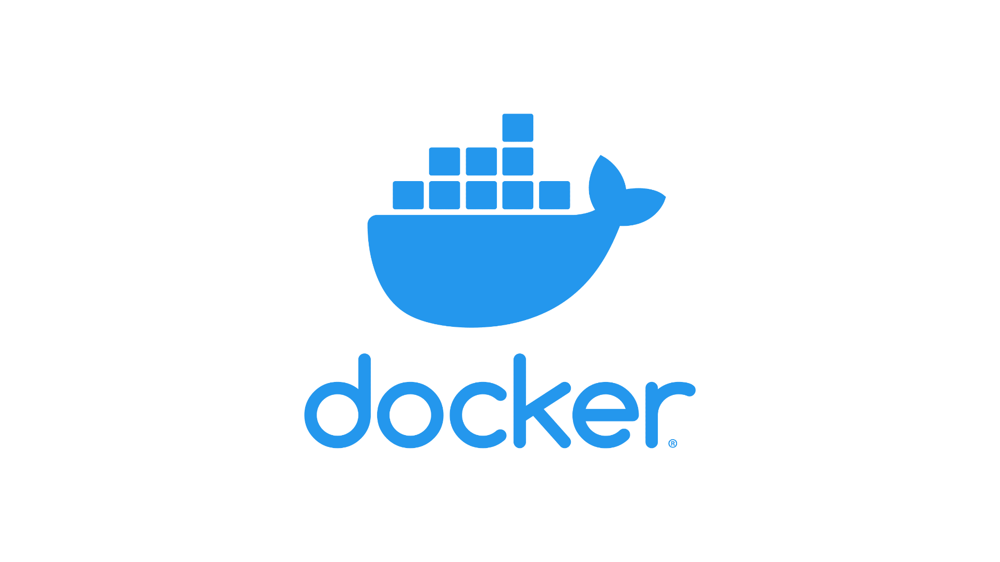

Skills
I possess a diverse set of skills that span various areas in Industrial
IT. Firstly, I am skilled in web networks,
I can easily set, configure, and maintain networks. This expertise allows me to
create and maintain robust web networks. I'm also able to use several protocols to
deploy
networks quickly. I'm familiar with protocols such as DHCP, which automatically assigns
valid IP addresses to all devices on a network.

Moreover, I am comfortable with C and C++ programming languages, essential for
developing
efficient softwares. These skills enable me to create low-level code
for specialized industrial applications. My experience with C++ has enabled me to create
a
lot of embedded system programmes, for example.


Also, my expertise in Java programming allow me to develop cross-platform
applications and web solutions, crucial in today's interconnected world.

In addition, I know how to make scripts on Linux thanks to the Bash programming language
that I've used throughout my studies. This language is very useful for automating
redundant tasks as part of system administration.

However, my skills are not limited to mastering a few programming languages. I'm able to
create and manage databases, making sure that the data is easily accessible. I'm also
fairly comfortable with embedded systems. I've often had to work with electricity,
sensors and actuators, so my knowledge isn't limited to software.

I've also had several courses on PLCs (Programmable Logic Controllers), and in
particular I've learnt to develop using
'Ladder Logic', which is a graphical programming language used by many PLCs.
I also used docker a lot in 2nd and 3rd year. Docker is a lightweight virtualisation
platform for creating and deploying applications in containers. Containers encapsulate
applications and their dependencies. This ensures portability and consistency of
execution between environments. This simplifies deployment and facilitates collaboration
between teams.

Finally, I bring valuable experience in system administration, involving the
management and maintenance of computer systems and networks to ensure their stability
and security.